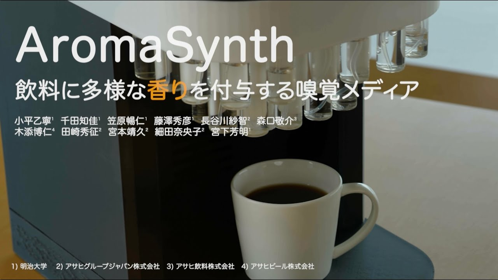
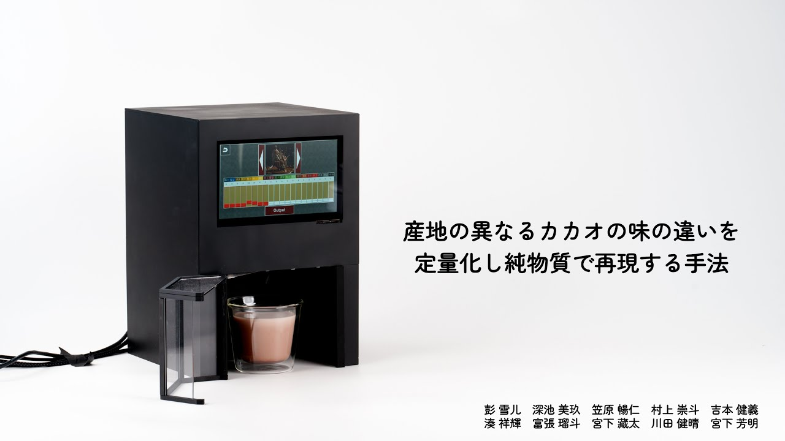
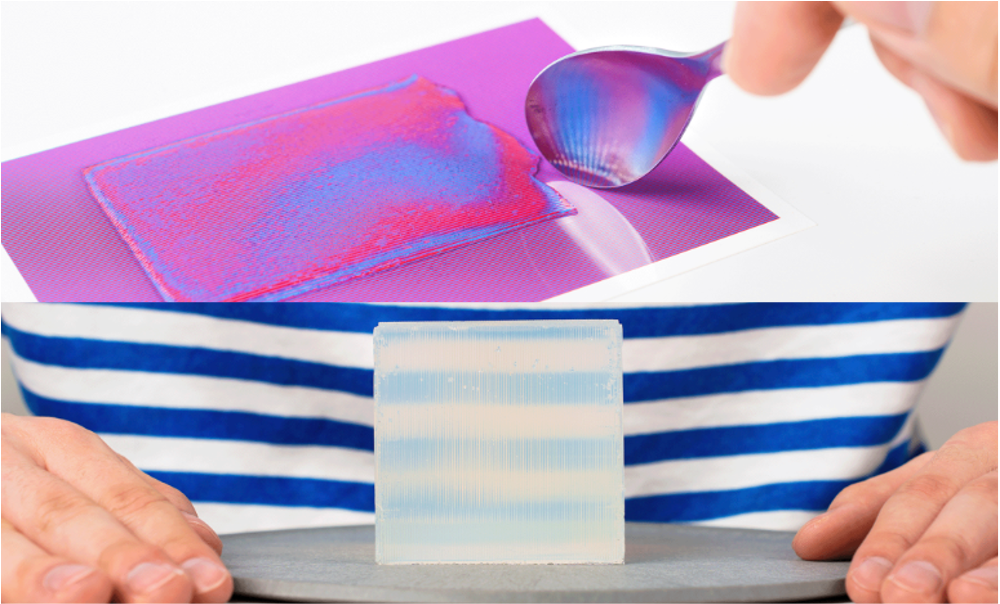

Project: Taste/Olfactory Media
味覚メディア・嗅覚メディアに関する研究
このプロジェクトでは、人間の味覚や嗅覚を拡張・制御する新しいインタフェースの提案を行っています。個人での使用を想定したカトラリー型の味覚ディスプレイや、飲料に香りを付与する嗅覚メディアなど、ハードウェアの開発などの研究や、インタフェースに関する研究を行っています。
TTTV4

概要: 一口ごとに異なる味を提示できるカトラリー型の味覚ディスプレイ「TTTV4」を開発。従来の据え置き型とは異なり、個人の食事に取り込みやすく、一人一人の味覚体験を向上させるパーソナライズされた味覚メディアが実現できる可能性を示唆。
Publications
-
TTTV4: Cutlery-Type Taste Display Toward Personal Taste Media
Nobuhito Kasahara, Miku Fukaike, and Homei Miyashita.
In Adjunct Proceedings of the 38th Annual ACM Symposium on User Interface Software and Technology (UIST Adjunct '25).
Article 167, 1–3.
(Acceptance Rate : 43.8%) -
TTTV4：一口ごとに味を提示する味覚のパーソナルメディア
笠原暢仁, 深池美玖, 宮下芳明.
第32回インタラクティブシステムとソフトウェアに関するワークショップ(WISS2024)予稿集, pp.1-6, 2024.
AromaSynth

概要: 飲料に多様な香りを付与することで風味（フレーバー）全体を拡張する嗅覚メディア「AromaSynth」を開発。
Publications
-
AromaSynth: 飲料に多様な香りを付与する嗅覚メディア
小平乙寧, 千田知佳, 笠原暢仁, 藤澤秀彦, 長谷川紗智, 森口敬介, 木添博仁, 田崎秀征, 宮本靖久, 細田奈央子, 宮下芳明.
エンタテインメントコンピューティングシンポジウム2025論文集, Vol. 2025, pp. 367-371, 2025.
Cacao Taste Reproduction

概要: 産地の異なるカカオの味の違いを定量化し、純物質を配合することでその味を人工的に再現する手法を提案。
Publications
-
産地の異なるカカオの味の違いを定量化し純物質で再現する手法
彭雪儿, 深池美玖, 笠原暢仁, 村上崇斗, 吉本健義, 湊祥輝, 富張瑠斗, 宮下藏太, 川田健晴, 宮下芳明.
エンタテインメントコンピューティングシンポジウム論文集, Vol.2023, 2023.
Edible Lenticular Lens

概要: 可食素材を用いてレンチキュラーレンズ（見る角度によって異なる絵柄が見えるレンズ）を作製する手法を提案した研究。
Publications
-
Fabrication of Edible lenticular lens
Takegi Yoshimoto, Nobuhito Kasahara, and Homei Miyashita.
In ACM SIGGRAPH 2023 Posters (SIGGRAPH '23).
Article 46, 1–2.
(Acceptance Rate : 35.7%)